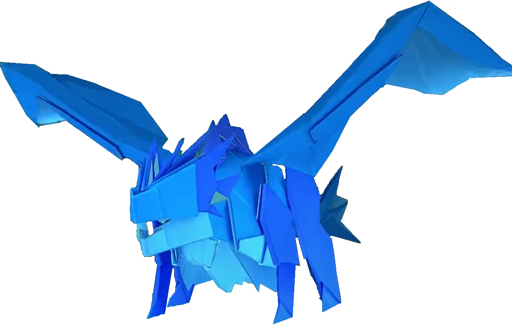
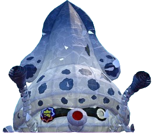
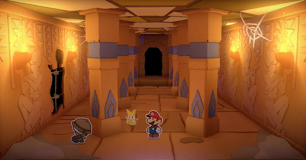
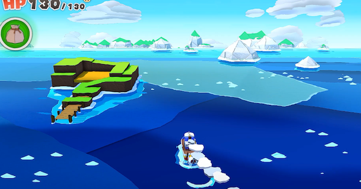

Paper Mario: The Origami King was released amid the global pandemic to much anticipation. The game
takes
another couple of big leaps forward to reach the spectacle that was the first three games. With a much more
compelling story and beautiful visuals and music, this game is a work of art that I personally hold up there
with the first three titles.
Plot
The story begins with the Mario Brothers being invited to Princess Peach's Castle for the
Origami Festival. However, once they arrive, Toad Town is more like a Ghost
Town, as it is
completely empty. Confused, the brothers head into Peach's Castle. Once they get into the
pain lobby, Luigi falls down a pitfall, and Princess Peach emerges from the shadows,
although she's now folded into Origami Peach! Mario then falls down the same pitfall as
Luigi, ending up in a dungeon, wondering what happened to Princess Peach.
Gameplay
Battle System
The battle
system this time
around is more puzzle-based than any of its predecessors. It
begins with multiple enemies surrounding Mario all jumbled up and disorganized. It is
Mario's job to rotate and slide the rings around him to line enemies up in an orderly line
or 2x2 square. Once he does this or runs out of time, Mario begins
attacking. He chooses
one action per group of enemies, typically you choose jumping for a line of enemies and
hammering for a square. There are no longer disposable attacks like in Sticker Star and
Color
Splash, but there are special weapons that you can buy later that have
durability on them.
This battle system is certainly unique, leaving some fans really liking it, while other
fans not really liking it as much. I really enjoy the battles for what they are. Solving the
puzzles can sometimes be very tricky but satisfying when you figure them out. One thing I
don't like as much is that the battles don't really feel like battles at all.
It really is
just the puzzle. If you solve the puzzle, you can win the battle without a scratch, but if
you don't solve the puzzle, only then will the enemies be able to
attack. This means that if
you're very good at the puzzles, the enemies are never more than pieces on a puzzle board.
Additionally, to many fans' dismay, experience points for battling have still
yet to return.
Although you do get a boatload of coins for battling, which can be used to purchase
accessories that boost your stats, so honestly, the lack of experience points isn't too bad
in this game in my opinion. The
boss fights of the game take the ring-puzzle
mechanic in a
different direction and place the boss in the middle of the ring and Mario on the outside.
It is Mario's job to rotate the rings to make a path from where he is to the boss in order
to attack it. These boss fights are actually pretty cool and a very unique concept. They
don't suffer the same fate as the regular battles not feeling like battles, as you can never
beat a boss in one turn, so it feels like a true back-and-forth battle.
Overworld
The overworld gameplay of The Origami King might be my favourite of the bunch. This game
pushed the visual power of the switch to its absolute limit, making the
locations you visit
nothing
short of stunning. They are also incredibly dynamic and much larger than the
previous
games. Apart from just the visuals, because the areas are so expansive,
there's a lot
more to them and a lot more to do. This game also moved away from the world map and
level structure of the previous two games, opting for an interconnected world
once again
just
like Paper Mario 64 and TTYD. This is much
better in my opinion and adds a sense of immersion into the world that the level structure
simply can't emulate. This game also takes a bit of inspiration from Super Paper Mario and
incorporates some overworld battles in the form of Paper Macho enemies. These
battles are
fun but not super deep. It essentially just consists of hitting them with your hammer a
couple of times and avoiding their attacks, but they are a fun and welcome addition. There's
also a new ability that Mario gets granted, called the
1000-fold arms. Mario can use them to
extend his arms very far to grab, pull, and tear objects in the
environment to solve puzzles
and access new places. It's not a game-changing new ability, but it is a fun addition to
puzzles and environmental interactivity.
Collectibles
The major addition to the gameplay in this game is its plethora of collectibles. This game
leans into the collect-a-thon style more than any other game in the series, and I am here
for it. It adds so much enjoyment and interactivity to the overworld that the
previous games
just don't have as much of. Firstly, there are non-bottomless pits that Mario
can fill up
using confetti. This is very similar to the painting mechanic of Color Splash, where Mario
can get confetti from the overworld as well as battling. These
non-bottomless pits are scattered all over the place and are sometimes necessary to fill in
to progress. I always get excited to fill one in whenever I see one. Another major
collectible are toads. Hundreds of toads have been folded up into various
types of origami, such as a
flower, butterfly, or dog. All Mario has to do is hit them with his hammer
to unfold them.
It's incredibly fun to scour new areas to try and find them all. Some
of them are pretty
well hidden! This game also has collectible figurines that you
find in treasure
chests,
receive from other characters
for helping them, or purchase in shops.
These trophies are
just as fun to collect and find as the other collectibles I have mentioned so far and
pertain to the events of your adventure as they are happening. The fourth
major collectible
is none other than hitting question blocks. I never would have
expected them to work as a
tracked statistic in your playthrough, but they work
incredibly well. Every time I see a
question block I haven't hit yet, I immediately start heading in
that direction. They are so
much fun to find, and especially so if they are invisible. There are so many times
throughout
the game where you think to yourself "I wonder, is there an
invisible block there?"
and then you swing your hammer and uncover the block! It's super fun. These four
collectibles dotted about your adventure add more than you would think to the joy of
exploring the worlds that this game offers.
Partners
Olivia
Olivia is the only partner who stays with you for the entirety of the game, from the very
beginning. She serves a similar role to Kersti and Huey as the partner you can ask for hints
about your environment. More than that though, she is probably the
most likeable of the
three. She is super wholesome and has an innocent curiosity about the world. She makes funny
jokes that never get annoying and is just a constant source of positivity and optimism
throughout your adventure. She also provides Mario with the ability to use the 1000-fold
arms. Later on, she
also unlocks origami transformations throughout the adventure that are used
to gain access
to new areas.
Bobby
Bobby the Bob-omb is the first partner you meet after Olivia. He may not look it, but he is
one of the most memorable characters of the game. When you first meet him,
you discover that he has
dementia, and doesn't really remember much about himself or anything for that
matter. He's
just been going through life seeing where the world takes him. He has no overworld ability,
and in battle, he doesn't do much beyond just bumping a single enemy on occasion.
Professor Toad
Professor Toad joins you for a brief time in a desert to help uncover the truth of some
ancient ruins. He's a much more one-dimensional character than Bobby is. His overworld
ability can be used to dig up shiny spots in the sand and uncover treasures
within. In
battle, he can dig up coins that deal good damage to a single square or line of enemies,
which is very useful.
Kamek
Kamek joins Mario for the last main chapter of the game. He joins Mario because he needs his
help restoring Bowser Jr. after he was hurt. Kamek makes for some fun interactions
with Mario and Olivia throughout the chapter. He has no overworld ability but can
cast spells in battle to damage a square or line of enemies.
Bowser
Bowser is all folded up into a wet-floor sign shape, making for some very funny moments with
him. He's only with Mario for the finale of the game. He can use his
fire breath to deal a
large amount of damage to enemies in a line formation.
Chapters
Prologue: Peach's Castle
After Mario gets sent to the dungeon underneath Peach's Castle, he soon finds
Olivia trapped
within the wall. He breaks Olivia free using the 1000-fold arms and then breaks his way out
of his cell. There, he finds the place crawling with origami Shy Guys, so he stealthily
avoids them. Mario then witnesses the rather gruesome-looking transformation of a paper
enemy
into an origami soldier. A little ways further, Mario finds and saves wet floor sign Bowser,
and then together they make their way out of the dungeon. Now on the roof of Peach's Castle,
they get ambushed by more folded shy guy soldiers, and we get our first look at the main
villain, The Origami King, King Olly. King Olly happens to be Olivia's
brother, who seems to
have become twisted into wanting the whole world to become Origami. Olly then begins
wrapping Peach's castle up in streamers, with Mario, Bowser, and Olivia just narrowly
escaping in a cool action sequence. The streamers then literally uproot Peach's Castle and
place it atop a faraway mountain. While escaping, Mario and Olivia get hurdled out of
Bowser's clown car by some debris and get sent flying into the
Whispering Woods. There
Mario gets access to confetti and learns the mechanic of filling in non-bottomless pits, as
well as getting used to the battle mechanics. After making their way through the woods, they
arrive in Toad Town, which is now overrun with Paper Macho soldiers. This is
where Mario is
introduced to the real-time battles with them. After clearing them all out, Mario and Olivia
decide that they need to follow each of the coloured streamers to cut them off at the
source. The bridge forward is broken though, so they make their way through the Toad
Town
sewers, called the Graffiti Underground to reach the remains of Peach's Castle
to go around the long way. It
is there that
they find Luigi, whom they then rescue from being stuck in a wall, and then he sets off in
his go-kart to find the key to Princess Peach's Castle. After this, Mario and Olivia set off
to cut the Red Streamer loose at its source.
Peach's Castle Dungeon
Peach's Castle Wrapped in Streamers
Whispering Woods
Toad Town
Graffiti Underground
Remains of Peach's Castle
Chapter 1: Picnic Road
The path to the Red Streamer takes Mario to Picnic Road, which is the first
real showcase of
how beautiful and expansive the areas in this game are. The colourful flowers make the place
extremely pretty. This is also the first place riddled with folded-up toads at every turn,
making it a joy to explore. Soon, Mario finds the Earth Vellumental Temple.
After finding
the 5 stones needed to open it up, Mario makes his way through the temple and finds the
legendary Earth Vellumental itself, which is a massive origami turtle. This is where Mario
gets introduced to the boss fight mechanics of the game, and then defeats the Earth
Vellumental. Upon defeating it, Olivia gains the power of transforming into the Earth
Vellumental, along with gaining its Earth powers. They then press forward through Picnic
Road and toward the Overlook Tower, where the Red Streamer is coming from. The climb up
Overlook Mountain is very enjoyable, filled with many more collectibles and
battles. Once
they arrive
at the Overlook Tower, Mario has to spend all the confetti he has patching up
the entire first floor.
This makes for a very cool way of restricting the
player's progress to one floor at a
time,
with Mario gaining just enough confetti on the current floor to reach the next floor
up.
Once he makes it to the top, he gets ambushed by a bunch of
coloured pencil missiles. After
dodging them for a bit, Mario reaches the very top of the tower and faces off with the boss
guarding the red streamer, the Coloured Pencils from Olly's
Legion of Stationery. After
defeating them, Mario uses his 1000-fold arms to bash down the source of the red streamer,
ending the first chapter.
Picnic Road
Earth Vellumental Temple
Overlook Mountain
Overlook Tower
Chapter 2: Autumn Mountain
Mario and Olivia decide to go after the Blue Streamer next, which appears to be in the
direction of Autumn Mountain, which Mario takes a gondola to get to. It is on
the gondola
that he meets Bobby, who decides to join Mario so that he has some friends. Together, the
three of them explore the beautiful Autumn Mountain, with Bobby getting himself into trouble
more than once. Eventually, they find the Water Vellumental Shrine. Inside
consists mainly
of water-based puzzles including slide puzzles. At the end of the temple, Mario battles the
Water Vellumental, which is a water dragon. It has the ability to wash away tiles on the
battle ring, making this
a tricky fight. Once defeated, Olivia gets the power of the Water Vellumental, which she
uses to fill up a dried-out river on the mountain. They then hop on a white-water gondola
ride, complete with whirlpools and debris blocking their way. At the bottom of the river,
Mario, Olivia, and Bobby find themselves at a theme park, Shogun Studios,
which is themed all
around ninjas. This theme park is a large area with numerous little buildings and
attractions to see and do, and it is a lot of fun to explore. Mario finds Luigi in the theme
park, who had found what he thought was the Key to Princess Peach's Castle, but was actually
for the Big Sho' Theatre. Upon noticing this, Luigi sets off once again in search of the key
to Peach's Castle. After completing multiple
different attractions, such as ninja star throwing and a ninja stealth house, the group
makes
their way into the main attraction, the Big Sho' Theatre. Using Luigi's key,
once inside, Mario
finds that the
entire audience is strapped to their seats
with rubber
bands! Mario is also forced onto the
stage to be part of the show, which consists of three very funny and unique shows involving
Paper Macho enemies, with one of them being a wild
western shootout. After completing the
three plays, Mario comes face-to-face with the main boss of the chapter, the
Rubber Band.
Mario had to knock off all the rubber bands off of him to claim victory. Once he does, he
breaks down the next streamer spool and frees the toads, ending the chapter.
Autumn Mountain
Water Vellumental Shrine
Shogun Studios
Ninja Attraction
Big Sho' Theatre
Big Sho' Theatre Shootout
Chapter 3: Scorching Sandpaper Desert
The beginning of this chapter is nothing short of a masterpiece in story. Firstly, the
celebration at Shogun Studios has a fireworks show, which triggers
Bobby's memory to come
back! Although he chooses not to elaborate further just yet. Then, Mario, Olivia, and Bobby
head further down the river, arriving at Sweetpaper Valley. Shortly after
arriving, they get
ambushed by King Olly, who drops a massive boulder in from of the way forward, stopping
Mario and Co. dead in their tracks and crushing Olivia underneath it! After thinking about
what
to do, Bobby tells Mario he has an idea, and to follow him, again, without explaining
further. Bobby tells Mario that they need to find the cruise ship, called
The Princess Peach. Mario finds the boat captain in Toad Town and asks him to
take them there. Once they
arrive, The Princess Peach is in shambles, and completely abandoned. Going through the dead
ship is extremely suspenseful, and you are filled with confusion, about what Bobby has
planned and what happened to this poor ship. After exploring the baron ship, Mario and Bobby
arrive in the VIP room, where Bobby picks up a box, telling Mario that it's what he came
for.
On their way out, however, they get attacked by the Paper Macho Gooper Blooper
out of
nowhere. This is the first Paper Macho boss fight that Mario does, and it's quite a fun
one! After defeating the Gooper Blooper, Mario and Bobby head on back to Sweetpaper Valley
where the boulder is. This is where Bobby reveals all about his memories and
what was in the
box. He tells Mario that he and his friends saved up enough money to get into the VIP room
on the Princess Peach. But after a little while, it got attacked by the Gooper Blooper which
knocked off Bobby's fuse. Bobby was the
only one of his friends to survive, but with no
memory of the event. What was in the box was none other than an extra fuse he and his
friends had kept in their room, and he was going to use it to explode the boulder away and
free Olivia. After thanking Mario for taking him with him and providing him closure, Bobby
lights the fuse before Mario gets the chance to change his mind. And then Bobby was gone,
along with the boulder. This whole sequence is incredibly emotional, and I feel the weight
of the loss of Bobby every time I play through it. And I don't get emotional often either!
Once Olivia wakes up from where the boulder once was, she immediately asks where Bobby is.
Mario then tells her with a heavy heart what had happened, and she immediately bursts into
tears and runs off into the cave ahead. Mario follows her into the
Breezy Tunnel, trying to
catch up with her. After navigating through a Monty Mole mining operation, Mario funds
Olivia in a dark corner, crying. Mario mourns with her and tries to cheer her up, but
nothing works. With nothing else to do, Mario scouts out the area ahead and leaves Olivia to
be alone for a bit. No sooner does Mario see Bobby's ghost within a nearby
rock pile. Bobby
tells him that he shouldn't worry about him, and to tell Olivia the same thing.
With Bobby's
words of encouragement, Mario heads back to Olivia and is able to cheer her up
using a
goofy Paper Macho Gooma mask that had made Olivia laugh previously. Without being able to
resist, Olivia is cheered up by this act, and Mario and Olivia press onward through the
Breezy Tunnel stronger than ever.
Within the Breezy Tunnel, Mario picks up a boot car, which is very useful in traversing the
Scorching Sandpaper Desert, where they arrive next. The Scorching Sandpaper
Desert is
another immaculate showcase of how big and ambitious the areas in this game are, practically
necessitating the use of the boot car to get around. It appears
that in the desert, the sun
is missing, causing the environment to be locked in a gloomy, yet pretty night. After riding
around the desert, Mario finds the local town, Snif City, which is home to a
bunch of
party-centric Snifits. After exploring the town, Mario heads back out into the desert and
encounters the giant Paper Macho Pokey, a second Paper Macho boss. After defeating it, Mario
rescues Professor Toad, from whom Mario enlists his help to find the yellow streamer.
Professor Toad helps them to uncover the secret Fire Vellumental Cave, which
Mario then
goes in to explore. After some platforming through a lot of fire and lava, Mario battles the
Fire Vellumental, which is a fire phoenix. Using the Water Vellumental's power to quelch its
flames is crucial to
this fight. Once defeated, Olivia gains the power of the Fire Vellumental, which she then
uses to light up some ancient toad towers, unearthing the
Temple of Shrooms. Inside has a
cryptic atmosphere to it, complete with Mario encountering faceless toads! After making his
way through the temple and recruiting the faceless toads, Mario finds and battles the next
major boss: Hole Punch. Hole Punch is a very groovy guy, who uses hole punching to
reduce
Mario's maximum HP. Despite this, Mario triumphs against him, and destroys the next streamer
spool, freeing the sun and ending the chapter.
Sweetpaper Vally
The Princess Peach
Breezy Tunnel
Mourning Bobby
Scorching Sandpaper Desert
Snif City
Fire Vellumental Cave

Temple of Shrooms
Chapter 4: The Great Sea
Upon rescuing a legendary sea-farer, Captain T. Ode, Mario and Olivia next travel to
The Great Sea. This is a super fun, fully open ocean for you to explore, with
11 islands and
numerous sunken treasures to find. I always take my time and explore every inch of it! One
of the islands, Bonehead Island, is a neat reference to Paper Mario: Color Splash's Fortune
Island. A very important island is the Mushroom Island, in which some lore is
given. Mario
encounters Luigi on the island as well, who believes yet again that he found the Key to
Princess Peach's Castle. Instead, it was the key to Diamond Island, which meant that
Luigi had to set off yet again to try and find the key to Peach's Castle. Inside
the
mushroom house, Mario saves a special toad, called the Origami Craftsman. He
then explains
that he was the one who created Olly using the special and forbidden
life-giving fold technique for the Origami Festival. It turns out that King Olly had since
used that same technique to fold together Olivia! After this, Mario travels to the three
card-face islands, Club, Spade, and Heart Island, to then unlock
Diamond Island. Inside the
Diamond Island are three trials, Power, Wisdom, and Courage. Before completing the trials,
Mario heads into the Ice Vellumental Mountain. This mountain consists of
puzzles to do with
sliding around on ice platforms. At the end, Mario finds the Ice Vellumental, which is a
giant polar bear. After defeating it, Olivia gains its power, which she then uses to freeze
the moats around the trials, enabling Mario to enter them. Mario and Olivia then travel
to the source of the purple streamer, the Sea Tower. The Sea Tower
is a combination shrine of
all four Vellumentals, taking an aspect from each of their locations, and
requiring Olivia
to make use of all four of their powers. At the top, Mario finds the next big boss,
Tape. Mario first destroys his case, which unleashes the tape's inner
speed demon. He is
able to tape pieces of the battle ring together, causing them to move as one. This makes this
fight one of the trickiest in the game to navigate because it limits your path options
significantly. After defeating him, Mario destroys the next streamer spool, ending the
chapter.

The Great Sea
Mushroom Island
Origami Craftsman Workshop
Diamond Island
Ice Vellumental Mountain
Sea Tower
Sea Tower (Inside)
Chapter 5: The Shangri-Spa
Atop the Sea Tower, Olivia uses her four Vellumental abilities once again to activate a
magical tractor beam, which Mario then uses to ascend high up into the sky. It is here that
Mario arrives at the Shangri-Spa, which is a spa up in the clouds. Outside of
the lobby,
Mario runs into Kamek, whom Olivia funnily believes is the caretaker of the spa. Mario then
makes his way to the central area, where he sees none other than Bowsers Castle,
crash-landed
on top of the main building of the spa. That explains why Bowser's minions are all over the
place cleaning up after the crash landing. The castle is being guarded by an origami Boss
Sumo Bro, blocking access to it entirely. Just then, Bowser Jr. comes flying by, attempting
to regain access to the castle but is no sooner cut up into pieces by a pair of scissors
that emerged from the castle. This is a cool nod to how we first beat Bowser Jr. back at the
start of Paper Mario: Sticker Star. Kamek quickly runs to Bowser Jr's aid and seeks Mario's
help to go with
him to the four rejuvenating hot springs of the spa to put Bowser Jr. back to his old self
again.
Three of the spas are simple enough to get to, with the fourth taking the group on a journey
through a maze-like jungle that is part of the Spring of the Jungle Mist. In
addition to
nearly getting lost, Mario, Kamek, and Olivia nearly get eaten alive by a relentless Paper
Macho Chain Chomp. It's literally an instant game over if it catches you! After this, Bowser
Jr. is fully rejuvenated, but then spends too much time in one of the springs, and loses all
of his color, requiring him to go to the secret fifth hot spring, the rainbow hot spring. In
order to get there, Mario must win the game show, Shy Guys Finish Last! This
game show is
heavily inspired by Snifit or Whiffit, and is a fun little game to play, unless, of
course,
you are going for 100% completion. If you are, then this game show is a brutal challenge to
complete. I couldn't even do it until my second playthrough! Once Mario wins Shy Guys Finish
Last and gets Bowser Jr. re-coloured, they go forth and challenge the origami
Boss Sumo Bro,
which ends up not being a super tough or complex boss fight.
Next, inside Bowser's Castle, there's an absolute mess, with countless
origami
soldiers
making a mess of the place.
Just as they begin to unleash an assault on Mario, all of Bowser's regular paper minions
come and commence an all-out brawl with the folded soldiers, allowing Mario to pass. When
making
his way through a somewhat creepy and empty hallway, Kamek suddenly vanishes after going on
ahead, sending a chill down Mario and Olivia's spines. A little further in, and the two
encounter none other than Luigi again! This time he has the key to the inner room of
Bowser's Castle instead of Peach's Castle. Determined to find the right key, Luigi sets off
again. After this, on their way back to the main room. Olivia
herself vanishes! Now really creeped out, Mario makes his way back to the entrance of the
castle and finds that all the minions, both paper and folded, are also eerily absent.
Mario then begins encountering these very creepy, all-black, cutout soldiers. This whole
part of the game is done incredibly well and really gets you on edge. After defeating them,
Mario finds who had been taking everyone, which is the snake-like Handaconda.
The battle
with the Handaconda is effectively rock-paper-scissors, which is pretty fun and doesn't take
too long, so it doesn't get tedious. After triumphing over the Handaconda, Olivia is saved,
but Kamek and the rest of the minions are still nowhere to be seen. In the
following hallway
is something extremely unsettling. Mario walks over the shredded remains of all of Bowser's
minions including Kamek and Bowser Jr. Even though everybody in this world is paper, it's
just the thought of it that leaves me aghast walking
through this place. This game takes
risks just like the older games in the series. After this room, Mario comes face to face
with a Paper Macho Buzzy Beetle that is completely covered in the shredded
remains of the
minions. Upon defeating it, Mario then has to fight the true culprit behind all this, the
Scissors.
The Scissors might just be my favourite boss in the game. The fight starts
with
him "showing mercy" by equipping his scissor cover and shielding his sharp blades. He then
warns
Mario by saying "If you destroy this cover, all bets are off!" which adds an incredible
amount of intimidation to this fight. To get the full experience of the battle against the
Scissors, I of
course destroy the cover right away. Doing
so unleashes the full fury of the scissors, and when he said all bets are off, he
MEANT it. Every single time he attacks, it is either you dodge it, or it's an instant
game over,
with no in-between. The stakes in this fight give such a rush of intensity and adrenaline
that I love this fight for. Every dodge you can feel the sharp blades just barely
grazing Mario. The music of this fight also perfectly adds to that "all bets are off"
feeling, and completely elevates this whole boss experience! If you are good with your
dodges, or of course never break the case, Mario
emerges victorious, reversing all of the doings of the scissors, thus putting all of
Bowser's minions back together. Mario then destroys the final streamer spool, ending his and
Olivia's quest to destroy them all!
The Shangri-Spa
Spring of the Jungle Mist
Shy Guys Finish Last
Bowser's Castle
Cutout Soldiers
Hallway With Minion Remains
Chapter 6: Origami Castle
After defeating the Scissors, Mario frees Bowser, who was imprisoned in his own castle.
After this, Bowser offers to take Mario and Olivia in his airship up to
Princess Peach's
castle now that all the streamers have been destroyed. Once on board, the airship almost
immediately begins being targeted by King Olly's Paper airplane armada. Mario takes control
of the gunner position on the airship in a shooter section of the game. Eventually, after
fending off numerous small paper airplanes, a massive one comes flying in and collides
straight into the ship. The airship then crash-lands in the Hotfoot Crater.
Mario, Olivia,
Bowser, Kamek, and Bowser Jr. then have to outrun a huge horde of Paper Macho Microgoombas.
Both Kamek and Bowser Jr. end up staying behind to hold off the Microgoombas while Mario,
Olivia, and Bowser head straight for Peach's Castle. Once there, they find
that the door is
locked. But just at that moment, Luigi arrives in the nick of time. At first,
he thinks he
has failed to get the key to Peach's Castle, but it turns out, comically, it
was clogged in
the tailpipe
of his go-kart the whole time and he had no idea! Now unlocked, Mario, Olivia, and Bowser
can head inside.
But pretty
much as soon as they do, the castle begins a massive transformation, becoming the
unrecognizable and very intimidating Origami Castle.
Now heading inside the Origami Castle,
might I just say that the music of this castle as you make your way through it is nothing
short of magical. The composition, with the use of violins and opera, mixed with the
electric
guitar, all blend so well to make an incredibly emotional, intimidating, and beautiful track
that expertly sets the tone for this final infiltration. The castle itself is an incredible
gauntlet of difficult battles and puzzles, with the music continuing even through the
battles as well! I don't have enough good things to say about the Origami Castle. It is
simply the perfect finale for an already incredible game. Once Mario has made his way
through the gauntlet, King Olly has one more surprise for him. His final general of the
Legion of Stationery, the Stapler. Coming off of the peak boss fight that was
the Scissors,
the Stapler isn't quite as good, but is still enjoyable and challenging. After defeating the
stapler, Bowser gets freed from being a wet floor sign! It turns out it was a staple that
was holding him like that the whole time. After this, Mario, Olivia, and Bowser make their
way up the final staircase, with their nerves rising with every step they
take, until
finally, they reach the top. Inside the door, they first see a terrifying image of Princess
Peach unconscious and practically fused with the Origami Castle itself. They then see King
Olly along with an absolutely insane amount of Origami Cranes all over the place. It turns
out
this is an ancient power which is capable of granting one wish to the one who has the drive
and will to fold 1000 Origami Cranes. Mario arrived just in time, as King Olly only had a
few to go.
Once Mario engages King Olly, there are three main phases of the battle.
First,
King Olly begins assuming the forms of the Vellumentals that Mario had fought before. This
phase is cool because Mario has full access to all four Vellumental powers himself, and has
to pick and choose based on the strengths and weaknesses of the Vellumental that King Olly
is currently using. After this, King Olly refolds himself into a sort of giga-soldier. In
retaliation, Olivia has the idea to do the same to Bowser and have them go head-to-head.
This phase involves Mario having to run around the arena and pound the ground behind Bowser
to give him the edge in the brawl between him and Olly. After Bowser succeeds in pushing
King Olly off the edge, he comes back as a giant, with nothing but rage and fury in his
eyes. This part is awesome. King Olly begins by scrambling up a giant Magic
Circle that
Olivia could use to unleash a powerful attack. Mario then has to race the clock and
unscramble the Magic Circle, while also having to dodge King Olly's attacks.
After fully
unscrambling the Magic Circle, Olivia uses it to transform into a massive hammer that Mario
wields with his 1000-fold arms. After some super cinematic dodges, Mario hits Olly with the
massive force of the Hammer, and he finally goes down.
After this climactic battle, King
Olly begins to realize the error of his ways and says that Olivia can fold the last of the
Origami Cranes and use his body as the last one. Olivia then makes the wish
"I wish to
reverse everything that my brother has created". And with that, the 1000 cranes fly off and
magically reverse everything, putting Peach's Castle back where it belongs and unfolding all
the enemies. However, once the cranes were done, Olivia was
nowhere to be found. This is
because it was Olly himself who had folded her together, meaning
that she undid herself!
This is also an incredibly sad moment because she was such a pure soul and companion
throughout your whole adventure. That night, Mario, Bowser, Luigi, Princess Peach, and all
the citizens of Toad Town gathered together to release floating lanterns in
honour of the
Origami and Olivia.


 a wild
western shootout. After completing the
three plays, Mario comes face-to-face with the main boss of the chapter, the
a wild
western shootout. After completing the
three plays, Mario comes face-to-face with the main boss of the chapter, the